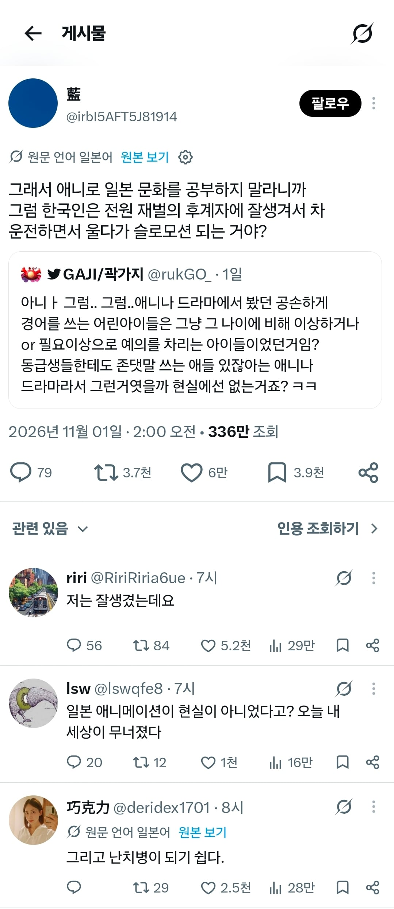
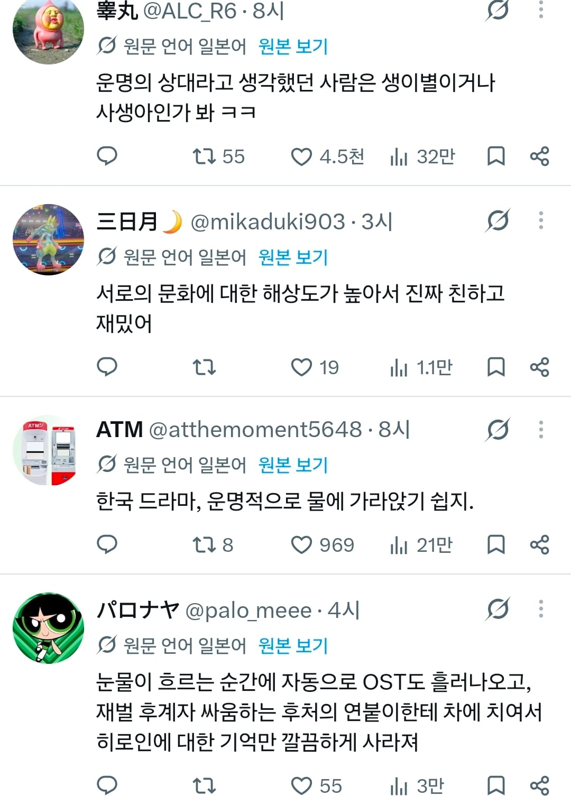

그리고 한드의 클리셰를 논하는 일본인들 ㅋㅋㅋㅋㅋㅋㅋ
꼭 한드에서는 나오는거라 너무나도 잘알겠고 ㅋㅋㅋ


그리고 한드의 클리셰를 논하는 일본인들 ㅋㅋㅋㅋㅋㅋㅋ
꼭 한드에서는 나오는거라 너무나도 잘알겠고 ㅋㅋㅋ
이거보고 용과 한박스 주문했다
you=오마에 킷사마 확실히 배움
킷사마, 오이, 오마에는 너무 예의를 차린 것 같지 않습니까?
저는 처음 보는 일본인을 2인칭으로 부를 때는
'테메에'라고 불러 친근감을 줍니다.
확실하게 배웠네… 여성을 부를땐 꼭 쿠소빗치라고 불러야됨 조심하셈
쿠소빗치는 뭔가 DQN스럽달까.
취향에는 맞지 않아서 보다 전통적인 표현을 좋아합니다.
쿠사망, 니쿠벤키, 메스부타 같은 표현이
비니지스를 포함한 다방면에 쓸 수 있어 효용성이 높은 것 같습니다.
쿠소빗치는 젊은 말투라 혹시나 나이들면 정중하게 온나 라고 부르면 되는거임. 오이 온나, 소코노 온나 이렇게
쿠소바바가…
다메다메 다메요
나는 AV 보고 섹스 공부함.
거근은 공부로 되는게 아니잖아요
운전하다가 운적은 있으니 합격
가끔 여자애들 중에 저거 컨셉인가? 싶은 애들은 있는데 오죠사마 컨셉은 본적 없음..
물에 가라앉기 쉽다가 뭐야 실망한다는뜻인가
용과같이보고 일본어 배웠습니다